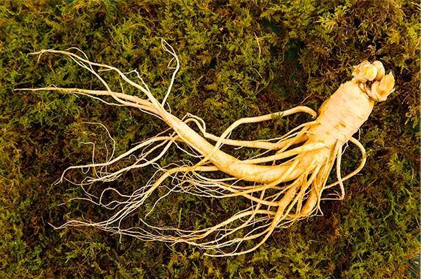

|  | 1. ㅣ 인삼 효능 ㅣ 원기 보충, 피로회복, 면역 강화, 소화기 강화 채취 ㅣ 가을, 뿌리를 채취, 최소 4~6년 이상의 것이 약효가 뛰어남 조제법 ㅣ 깨끗이 세척 후 건조시키고, 필요에 따라 중숙하여 사용 주의사항 ㅣ 고혈압이나 열이 많은 사람은 과다복용에 주의하여야한다. |
| 2. ㅣ 작약 효능 ㅣ 혈액순환 촉진, 통증 완화, 간 기능 개선, 생리통 완화 채취 ㅣ 봄~가을, 뿌리를 수확함 조제법 ㅣ 뿌리를 세척한 후 절단해 건조, 필요에 따라 볶거나 중숙하여 사용 주의사항 ㅣ 차가운 체질의 사람은 과다복용에 주의하여야한다. |
|
| 3. ㅣ 감초 효능 ㅣ 약의 독성을 완화하고 소화기 질환, 해독 작용, 염증 완화에 효과적 채취 ㅣ 가을, 뿌리를 캐어 햇빛에 말림 조제법 ㅣ 생으로 사용하거나 볶아 독성을 줄이고 약효를 높임 주의사항 ㅣ 장기간 과다 섭취 시 고혈압 및 부종을 유발할 수 있다. |
|
| 4. ㅣ 황기 효능 ㅣ 면역 강화, 기력 보충, 신체의 부종 제거, 상처 회복 촉진 채취 ㅣ 가을, 뿌리를 수확 조제법 ㅣ 뿌리르 씻고 건조, 필요시 약탕으로 조리 주의사항 ㅣ 몸에 열이 많은 사람은 적당량 복용하여야한다. |
|
| 5. ㅣ 대황 효능 ㅣ 변비 치료, 열을 내리고 독소를 제거, 염증 완화 채취 ㅣ 여름이나 가을, 뿌리를 채취 조제법 ㅣ 뿌리를 건조시킨 후 절단하여 사용, 경우에 따라 술로 증숙해 약효를 조절 주의사항 ㅣ 임산부나 허약 체질의 경우 사용에 주의하여야한다. |